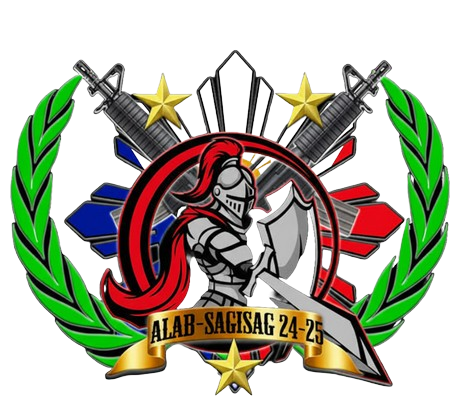

DON MARIANO MARCOS MEMORIAL STATE UNIVERSITY
SOUTH LA UNION CAMPUS
RESERVE OFFICER TRAINING CORPS
1st Regional Community Defense Group, (1RCDG)
103RD Community Defense Center (103CDC)
This Website Developed by one of the Advance ROTC Officer
of Batch Alab-Sagisag 24-25 (LU-R25)
C/Maj. Juhair D Morad Corps S1 (Admin/Adjutant)
for more info contact us:
FB: DMMMSU SLUC-ROTC
103RD Community Defense Center (103CDC)
This Website Developed by one of the Advance ROTC Officer
of Batch Alab-Sagisag 24-25 (LU-R25)
C/Maj. Juhair D Morad Corps S1 (Admin/Adjutant)
for more info contact us:
FB: DMMMSU SLUC-ROTC
Be one of us,
Be a Cadet,
Join ROTC
Be a Cadet,
Join ROTC